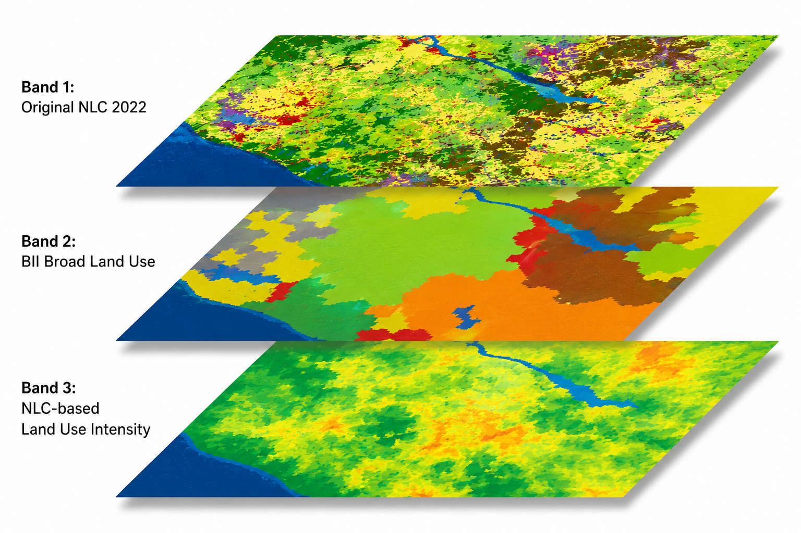

NLC to BII crosswalk
Summary
The NLC 2022 data were reclassified into broad land use classes required by the BII workflow (Clements et al. 2026). A second band records the available low, medium or high intensity class associated with the original NLC category.
Input data
- NLC 2022.
- A BII reclassification table linking each NLC class to:
- a broad BII land use class; and
- selected intensity class for each NLC class.
The NLC thus is used for 2 classification frameworks: 1. broad land use classes and 2. the broad level classes’ intensity gradients. The protected areas class is added later during segment allocation using the SAPAD layer.
Data preparation
The original NLC classes (for details see #nlclooklup) were grouped into six broad BII land use categories:
| Value | BII land use |
|---|---|
| 1 | Settlements |
| 2 | Timber plantations |
| 3 | Tree crops |
| 4 | Croplands |
| 5 | Protected |
| 6 | Untransformed |
-Waterbodies are excluded from the terrestrial assessment.
The preliminary intensity classes that could be identified from the NLC 2022 were retained in a second band as:
| Raster value | Intensity class |
|---|---|
| 0 | No within class gradient |
| 1 | Unknown |
| 2 | Low |
| 3 | Medium |
| 4 | High |
Analysis
Script: https://code.earthengine.google.com/6958a52908d318de493032cd5dbdd59d
Each NLC class was assigned a broad BII land use value in GEE. Where we were able to distinguished BII within-class intensity from NLC classes, it was also assigned a low, medium or high intensity class.
The resulting raster dataset contains three bands:
bii_land_use
bii_intensity_class
sanlc_classThe original national land cover value is retained in sanlc_class for traceability.

Detailed NLC reclassification and intensity lookup
The table below records the current preliminiray assignment for every NLC class:
low,mediumandhighare implemented as 0, 0.5 and 1;unknownmeans that intensity has not yet been assigned from NLC alone;n/ameans that a separate class-level rule is used or the class is excluded.
| NLC code | NLC class | BII land use | NLC-based intensity | Current numeric treatment | Notes |
|---|---|---|---|---|---|
| 1 | contiguous (indigenous) forest | Untransformed lands | unknown | Not yet assigned | some likely to be degraded |
| 2 | contiguous low forest & thicket | Untransformed lands | unknown | Not yet assigned | some likely to be degraded |
| 3 | dense forest & woodland | Untransformed lands | unknown | Not yet assigned | some likely to be degraded |
| 4 | open woodland | Untransformed lands | unknown | Not yet assigned | some likely to be degraded |
| 5 | contiguous & dense plantation forest | Timber plantations | n/a | 1, fixed by class | some likely to be degraded |
| 6 | open & sparse plantation forest | Timber plantations | n/a | 1, fixed by class | some likely to be degraded |
| 7 | temporary unplanted (clear-felled) plantation forest | Timber plantations | n/a | 1, fixed by class | some likely to be degraded |
| 8 | low shrubland (other) | Untransformed lands | unknown | Not yet assigned | some likely to be degraded |
| 9 | low shrubland (fynbos) | Untransformed lands | unknown | Not yet assigned | some likely to be degraded |
| 10 | low shrubland (succulent karoo) | Untransformed lands | unknown | Not yet assigned | some likely to be degraded |
| 11 | low shrubland (nama karoo) | Untransformed lands | unknown | Not yet assigned | some likely to be degraded |
| 12 | sparsely wooded grassland | Untransformed lands | unknown | Not yet assigned | some likely to be degraded |
| 13 | natural grassland | Untransformed lands | unknown | Not yet assigned | some likely to be degraded |
| 14 | natural rivers | Exclude | n/a | Excluded | water excluded |
| 15 | natural estuaries & lagoons | Exclude | n/a | Excluded | water excluded |
| 16 | natural ocean & coastal | Exclude | n/a | Excluded | water excluded |
| 17 | natural lakes | Exclude | n/a | Excluded | water excluded |
| 18 | natural pans (flooded at observation times) | Exclude | n/a | Excluded | water excluded |
| 19 | artificial dams, including canals | Exclude | n/a | Excluded | water excluded |
| 20 | artificial sewage ponds | Exclude | n/a | Excluded | water excluded |
| 21 | artificial flooded mine pits | Exclude | n/a | Excluded | water excluded |
| 22 | herbaceous wetlands, currently mapped | Untransformed lands | unknown | Not yet assigned | some likely to be degraded |
| 23 | herbaceous wetlands, previously mapped | Untransformed lands | unknown | Not yet assigned | some likely to be degraded |
| 24 | mangrove wetlands | Untransformed lands | unknown | Not yet assigned | some likely to be degraded |
| 25 | natural rock surfaces | Untransformed lands | unknown | Not yet assigned | some likely to be degraded |
| 26 | dry pans | Untransformed lands | unknown | Not yet assigned | some likely to be degraded |
| 27 | eroded lands | Untransformed lands | high | 1 | Less than 1% of the country; intended to represent severe erosion |
| 28 | sand dunes, terrestrial | Untransformed lands | unknown | Not yet assigned | some likely to be degraded |
| 29 | coastal sand and dunes | Untransformed lands | unknown | Not yet assigned | some likely to be degraded |
| 30 | bare riverbed material | Untransformed lands | unknown | Not yet assigned | some likely to be degraded |
| 31 | other bare | Untransformed lands | unknown | Not yet assigned | some likely to be degraded |
| 32 | cultivated commercial permanent orchards | Tree croplands | high | 1 | |
| 33 | cultivated commercial permanent vines | Tree croplands | high | 1 | |
| 34 | cultivated commercial sugarcane pivot irrigated | Croplands | high | 1 | |
| 35 | cultivated commercial permanent pineapples | Croplands | high | 1 | |
| 36 | cultivated commercial sugarcane non-pivot | Croplands | high | 1 | |
| 37 | cultivated emerging farmer sugarcane non-pivot | Croplands | high | 1 | |
| 38 | commercial annual crops pivot irrigated | Croplands | high | 1 | |
| 39 | commercial annual crops non-pivot irrigated | Croplands | high | 1 | |
| 40 | commercial annual crops rain-fed or dryland | Croplands | high | 1 | |
| 41 | subsistence or small-scale annual crops | Croplands | low | 0 | |
| 42 | fallow land and old fields, trees | Untransformed lands | high | 1, provisional | Assumed degraded because it was formerly cropland |
| 43 | fallow land and old fields, bush | Untransformed lands | high | 1, provisional | Assumed degraded because it was formerly cropland |
| 44 | fallow land and old fields, grass | Untransformed lands | high | 1, provisional | Assumed degraded because it was formerly cropland |
| 45 | fallow land and old fields, bare | Untransformed lands | high | 1 | Assumed degraded because it was formerly cropland and is currently bare |
| 46 | fallow land and old fields, low shrub | Untransformed lands | high | 1, provisional | Assumed degraded because it was formerly cropland |
| 47 | residential formal, tree | Settlements | medium | 0.5 | |
| 48 | residential formal, bush | Settlements | medium | 0.5 | |
| 49 | residential formal, low vegetation or grass | Settlements | medium | 0.5 | |
| 50 | residential formal, bare | Settlements | high | 1 | |
| 51 | residential informal, tree | Settlements | medium | 0.5 | |
| 52 | residential informal, bush | Settlements | medium | 0.5 | |
| 53 | residential informal, low vegetation or grass | Settlements | medium | 0.5 | |
| 54 | residential informal, bare | Settlements | high | 1 | |
| 55 | village scattered, bare and low vegetation or grass | Settlements | low | 0 | |
| 56 | village dense, bare and low vegetation or grass | Settlements | low | 0 | |
| 57 | smallholdings, tree | Settlements | low | 0 | Could also represent low-intensity agriculture, but agriculture is not always present and the class is generally peri-urban |
| 58 | smallholdings, bush | Settlements | low | 0 | Could also represent low-intensity agriculture, but agriculture is not always present and the class is generally peri-urban |
| 59 | smallholdings, low vegetation or grass | Settlements | low | 0 | Could also represent low-intensity agriculture, but agriculture is not always present and the class is generally peri-urban |
| 60 | smallholdings, bare | Settlements | low | 0 | Could also represent low-intensity agriculture, but agriculture is not always present and the class is generally peri-urban |
| 61 | urban recreational fields, tree | Settlements | low | 0 | |
| 62 | urban recreational fields, bush | Settlements | low | 0 | |
| 63 | urban recreational fields, grass | Settlements | low | 0 | |
| 64 | urban recreational fields, bare | Settlements | low | 0 | |
| 65 | commercial | Settlements | high | 1 | |
| 66 | industrial | Settlements | high | 1 | |
| 67 | roads and rails, major linear features | Settlements | high | 1 | |
| 68 | mines: surface infrastructure | Settlements | high | 1 | |
| 69 | mines: extraction pits and quarries | Settlements | high | 1 | |
| 70 | mines: salt mines | Settlements | high | 1 | |
| 71 | mines: tailings and resource dumps | Settlements | high | 1 | |
| 72 | landfills | Settlements | high | 1 | |
| 73 | fallow land and old fields, wetlands | Untransformed lands | high | 1, provisional | Assumed degraded because it was formerly cropland |